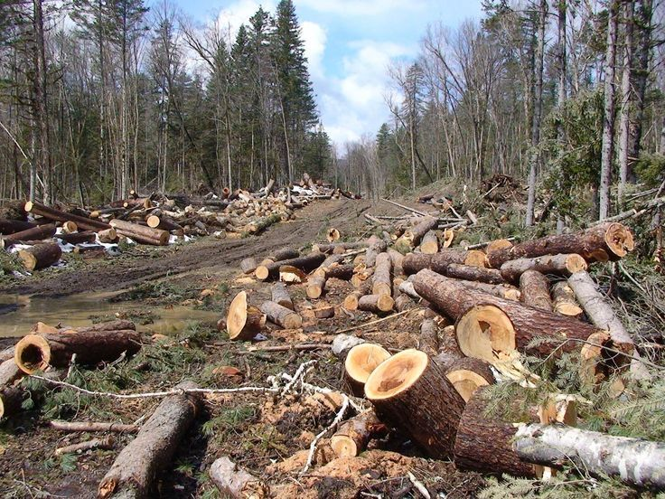

Mengapa Kami Mulai?
Indonesia memiliki salah satu hutan hujan tropis terbesar di dunia, namun tingkat deforestasi sangat memprihatinkan. Lahan yang dulunya hijau kini gundul.
Eco Nusantara hadir untuk menjembatani Anda dengan relawan lapangan untuk menghijaukan kembali Indonesia.
Galeri Before-After
Dokumentasi transparansi titik proyek secara berkala.
 MEI 2023 (SEBELUM)
MEI 2023 (SEBELUM)
 DES 2025 (SESUDAH)
DES 2025 (SESUDAH)
Sabuk Hijau Mangrove Demak
Wilayah pesisir Demak selama bertahun-tahun menghadapi ancaman serius akibat abrasi dan banjir rob yang semakin parah. Permukiman warga perlahan terendam air laut, lahan produktif hilang, dan aktivitas ekonomi masyarakat terganggu secara signifikan.
Untuk mengatasi permasalahan ini, dilakukan program pembangunan sabuk hijau mangrove sepanjang 2 kilometer sebagai solusi berbasis alam yang berkelanjutan. Penanaman mangrove dilakukan secara bertahap dengan melibatkan masyarakat lokal sebagai bagian dari upaya pemberdayaan sekaligus perlindungan lingkungan.
Mangrove memiliki peran penting sebagai benteng alami pesisir. Akar-akar kuatnya mampu meredam gelombang laut, menahan abrasi, serta mengurangi dampak banjir rob. Selain itu, ekosistem mangrove juga menjadi habitat bagi berbagai jenis ikan dan biota laut yang mendukung kehidupan nelayan setempat.
Kini, perubahan mulai terlihat. Area yang sebelumnya terdampak parah mulai menunjukkan pemulihan, dengan pertumbuhan mangrove yang semakin luas dan kondisi pesisir yang lebih stabil. Inisiatif ini tidak hanya melindungi lingkungan, tetapi juga memberikan harapan baru bagi masyarakat untuk hidup lebih aman dan berkelanjutan di masa depan.